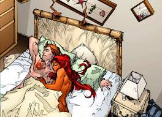
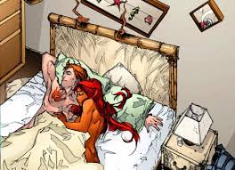

Origem
A princesa Koriand'r nasceu no planeta Tamaran, um planeta governado pelas emoções, no qual os habitantes tem a habilidade de absorver energia solar e transformar essa energia, tornando-os capazes de voar. Sua irmã mais velha, Komander (conhecida também como Estrela Negra), desenvolveu uma doentia rivalidade com ela depois de sofrer uma rara deficiência na infância, que a impedia de absorver energia solar, tornando-a incapaz de voar e como consequência negando seu direito ao trono. Esta rivalidade se intensificou quando as irmãs foram enviadas para treinar combate corpo a corpo com mestres guerreiros de Okaara, e durante um dos exercícios, Komand'r tentou matar sua irmã. Como resultado Komand'r foi expulsa e jurou vingança.
Então, como parte de sua vingança, Komand'r traiu seu planeta e forneceu informações detalhadas sobre a defesa de Tamaran aos seus inimigos, a Cidadela (Citadel, em inglês). Eles conquistaram Tamaran com facilidade, e a princesa Koriander foi entregue pela irmã como escrava em troca da não invasão do planeta, e como parte do tratado, Kori não poderia voltar, caso contrário a Cidadela voltaria para destruir seu planeta. Quando Koriander tirou a vida a um dos seus algozes, Komander resolveu executá-la pessoalmente. No entanto, ambas foram atacadas e sequestradas pelos Psions, uma raça alienígena de cientistas sádicos, especializados em bioengenharia. Submetidas a sinistros experimentos científicos, as duas irmãs conseguiram escapar devido à distração causada pelo ataque das forças de Komander à base dos Psions. Usando a sua recém-adquirida capacidade de disparar rajadas energéticas, Koriander libertou Komander, que ainda estava a absorver energia. Gesto compassivo que a vilã retribuiu usando as suas novas habilidades. O calvário da princesa só chegaria ao fim quando conseguiu escapar do seu cativeiro a bordo de uma espaçonave roubada. Perseguida por caças da Cidadela, Koriander entrou na órbita da Terra, onde foi recapturada. Sendo, porém, prontamente libertada graças à intervenção dos Titãs, equipe de jovens super-heróis liderada por Robin (Dick Grayson). Após uma grande batalha, os guerreiros da Cidadela que não foram destruídos, fugiram. Koriander ficou na Terra e passou a fazer parte dos Jovens Titãs, com o nome de Estelar. Desde a primeira vez que viu Dick Grayson (na época Robin) Estelar se apaixonou perdidamente por ele. Porém Dick demorou a corresponder a esse amor e acabou à decepcionando algumas vezes.
Estelar era extremamente gentil e inocente, mas quando ameaçada reagia violentamente, com uma fúria que precisava ser contida por Dick. Tem a pele dourada e os olhos verdes, como todos os Tamaraneanos. Ela é alta e seu traje em tons de roxo e violeta deixa grande parte de seu corpo à mostra.
Antes do evento chamado Crise Infinita, Estelar estava atuando nos Renegados
Estelar
Estelar (Starfire no original; literalmente "Fogo Estelar" ou "Estrela de Fogo"), também conhecida por seu verdadeiro nome, Koriand'r, é uma personagem fictícia de histórias em quadrinhos publicadas pela editora americana DC Comics, sendo a segunda princesa nascida da família real do planeta alienígena Tamaran e que juntamente com Ravena e Ciborgue é uma personagem criada por Marv Wolfman e George Pérez exclusivamente para a estreia dos Novos Titãs[1] em 1980 na edição #26 da série DC Comics Present.
Os Novos 52
Como consequência dos eventos do Flashpoint, todo o Universo DC foi reiniciado e a história de Estelar reescrita.
Em sua nova origem, Koriand'r nasceu no planeta Tamaran como uma princesa e segunda na linha de sucessão ao trono, crescendo em amor e alegria com os pais e sua amada irmã, Komand'r. Ainda criança, Kori viu seu povo ser massacrado pela raça da Cidadela, além de ter perdido seus pais. Komand'r fora elevada ao posto de rainha com apenas 14 anos e teve de vender a irmã mais nova para escravidão para manter a "paz" com a Cidadela.
Durante seu tempo como escrava, Kori sofreu com o trabalho forçado, a fome, a tortura e o abusos. Durante suas sessões de experimentos científicos torturantes com os Psions, Kori teve seu meta-gene até então adormecido despertado, dando a ela incríveis poderes que a jovem usaria contra um dos soldados da Cidadela. Assustados com poder da garota, seus senhores passaram a drogá-la com uma forte substância da qual Kori tornou-se viciada. No entanto, depois de conhecer o guarda da Cidadela albino Orn e o dominador Depalo, Kori passou a lutar contra seu vício, além de se dedicar a estudar e melhorar sua habilidades nas artes da guerra. Depois de semanas de planejamento, Kori e outros prisioneiros armaram uma emboscada e foram capazes de tomar o controle da nave escravista S.S. Estelar, onde estavam presos. Depois dessa conquista, alguns escravos se uniram a Koriand'r como sua equipe e retornaram com ela para Tamaran, onde unidos derrubaram a Cidadela e os expulsaram do planeta.
Kori não conseguia perdoar a irmã pelo que ela havia feito, mas queria mostrar amor por servir Tamaran, mesmo que tal amor já não existisse. Durante quase um ano, Kori serviu com embaixadora de Tamaran pela galáxia, até perceber que não podia continuar fingindo ser algo que não era, uma pessoa exemplar e seguidora de leis, e decidiu viajar sozinha pelas estrelas a fim de se descobrir. Durante sua viagem, Kori acabou por cair com sua nave na Terra.
Na Terra, Koriand'r, agora conhecida como Estelar, conheceu de maneira desconhecida Capuz Vermeho (Jason Todd) e Arsenal (Roy Harper), tornando-se sua amiga e parceira na luta ao crime. Juntos, eles fundaram uma equipe de jovens heróis que mais tarde ganhou novos membros. Kori acabou por se envolver romanticamente com Jason durante esse período. De maneira não explicada, os dois romperam e a equipe foi dissolvida, levando Estelar a se iso
Uniformes
Uniforme usado em edições na era Novos 52 em 2018
Uniforme usado durante os Novos 52 na saga "Capuz Vermelho e os fora da lei"
Relacionamentos
Quando membro dos Titãs, Koriand'r era frequentemente envolvida romanticamente com Robin. Ela já foi casada duas vezes, ambas com homens tamaraneanos: Primeiramente com o Príncipe Karras para selar um tratado de paz; e depois com o General Phy'zzon por amor. Ambos Karras e Phy'zzon morreram em batalha.
Entre estes, ela quase se casou com Dick Grayson, mas seu casamento foi interrompido por Ravena (que estava possuída por seu pai). Ravena mata o padre antes que ele pudesse pronunciar Dick e Kori como marido e mulher. O relacionamento já estava com dificuldades, e o ataque permitiu que os dois nunca mais tivessem um relacionamento sério.
Na linha do tempo do Reino do Amanhã, Dick e Kori se casaram e tiveram uma filha que herdou os poderes da mãe: Mar'i Grayson, melhor conhecida como a heroína Nightstar.
Em Capuz Vermelho e os foras da lei, chega a esquecer do seu relacionamento com Dick e acaba se encantando por Jason Todd após salvar sua vida, ocorrendo um relacionamento entre eles, além da forte atração que Jason sentia a todo momento ao lado dela, temendo a todo momento que ela se lembrasse de Dick e se afastasse dele. Na mesma série, Estelar chega a beijar o arqueiro-vermelho e construir uma grande amizade com ele.
 
